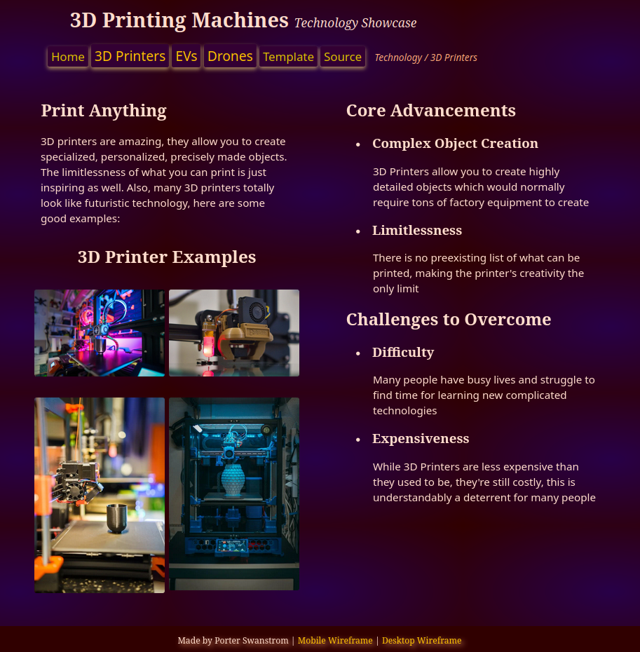

Projects & What I Learned
Unit 1 Project (View)
I learned how to create and style websites using HTML and CSS. This website had a header, navigation area, main content section, and a footer.
Unit 2 Project (View)
I learned how to make websites that can adapt well to different types of devices. This website made heavy use of grids, especially for image galleries.

Unit 3 Project (View)
I learned how to add and adaptively style more complex HTML elements. This website used a table, a form, and embedded videos.